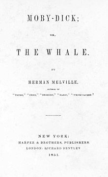

Moby-Dick; or, The Whale is an 1851 epic novel by American writer Herman Melville The book is centered on the sailor Ishmael's narrative of the maniacal quest of Ahab, captain of the whaling ship Pequod, for vengeance against Moby Dick, the giant white sperm whale that bit off his leg on the ship's previous voyage. A contribution to the literature of the American Renaissance, Moby-Dick was published to mixed reviews, was a commercial failure, and was out of print at the time of the author's death in 1891. Its reputation as a Great American Novel was established only in the 20th century, after the 1919 centennial of its author's birth. William Faulkner said he wished he had written the book himself,[1] and D. H. Lawrence called it "one of the strangest and most wonderful books in the world" and "the greatest book of the sea ever written